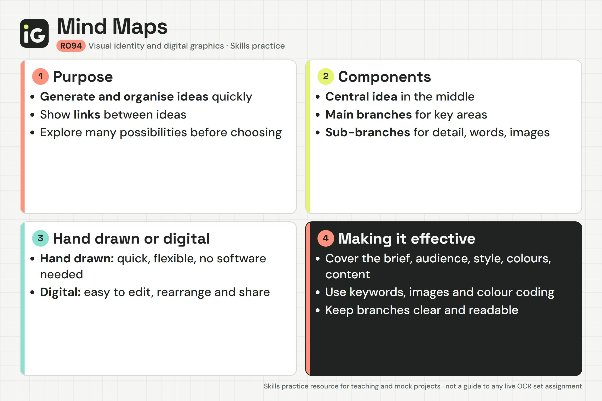

Hand drawn
- Fast and flexible
- Easy to sketch symbols

Explode your ideas based directly on the client brief notes.
Use this checklist to make sure you can cover every part of this topic.
Start with the central idea and branch out to explore the brand, its values, the audience, colours, typography, symbols and imagery.